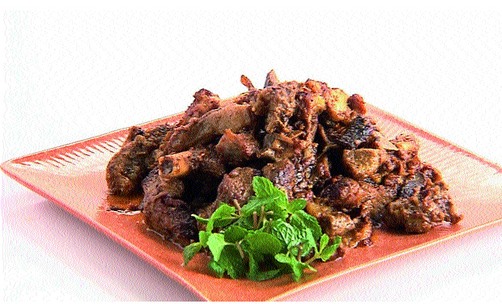

Pathar ka Gosht

Description
Pathar-ka-Gosht is a popular lamb dish, especially prepared in Hyderabad, Telangana, India. This dish is prepared with mutton by heating it on a wide stone, on a flame. The spices are added once the meat pieces are heated and served with onions and other ingredients
Ingredients
- Mutton(gosht) 1kilo
- Cashwenuts(kaju) 1/2cup
- Khas khas 2Tbspns(i used badam)
- Milk 1/2 liter
- Green chillies paste 2-3Tspns
- Red chilli powder 2-3Tspns
- Whole garam masala 2each
- Whole Black pepper 1Tspn(crushed a bit)
- Shazeera 1Tspn
- Garama masala powder 1Tspn
- Ginger-Garlic paste 3Tbspns
- Desi Ghee 4Tbspns
- Salt to taste.
- Granite stone (slab)with charcoals for cooking
- Patthar ka phool(optional) 1
- Coriander leaves 1bunch
- Mint leaves 1/2 bunch.
Steps
- This dish is made on a hot stone...so goes the name patthar ka gosht.Its a traditional recipe which is usually made rarely but believe me its very easy to make.
- Firstly heat a granide stone with charcoals underneath.you can also make it a cooker or vessel if u dont have the stone.
- Now heat oil together with desi ghee and add shazeera,whole garam masalas.
- Add ginger-garlic paste,greenchilli paste,kaju-khaskhas(or)badam paste,garam masala powder and whole black pepper(crushed a bit),pattar ka phool & salt.
- Add the mutton pieces and fry for 5-6 minutes.
- Add coriander and mint leaves and again fry for sometime.
- Add about half a liter of milk and pressure cook(for 10mins)/or cook on ur stone.
- Cover the lid and cook on low flame till the mutton becomes tender for approximately 1hour.
- Finally garnish this dish with coriander leaves.